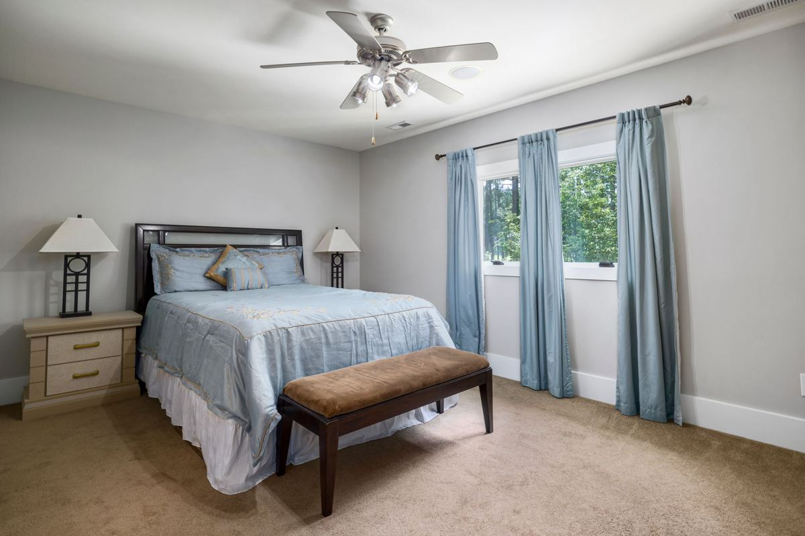

A spare room becomes a guest room again when three things leave: the furniture nobody uses, the boxes that were only ever passing through, and whatever large item got parked in there because there was nowhere else. Everything else is tidying. Starting now gives you room to donate the good pieces instead of panic-hauling all of it in late November.
Ten weeks sounds like plenty. It is exactly enough.
How the room got this way
Nobody sits down and decides to fill a bedroom. It happens in single decisions that each made sense at the time.
A treadmill that was going to get used in there. The old bedroom set that came out when the primary got redone. Boxes from a move that never finished getting unpacked, which are now furniture in their own right. A parent's things after a downsizing, still in the bins they arrived in. Seasonal decorations that never went back up to the attic. Clothes in bags meant for donation that have been waiting since spring.
The pattern is that almost none of it belongs to the room. That is good news, because it means the fix is removal rather than organization.
Why mid September and not mid November
Two reasons, and both are about the good stuff.
Donation is the slow part. Local donation partners and Habitat for Humanity's ReStore locations take furniture in usable condition, but they are choosy about what they can move, and pickups get scheduled out. Start in September and the dresser you do not need can go somewhere useful. Start the week of the holiday and everything on the floor gets treated as trash because there is no time left to do better.
The other reason is city bulky collection. Most cities here run it on a published schedule, and if you catch the right week it costs nothing. Plano publishes its rules under bulky waste collection and Frisco under bulk trash pickup. In September there is time to wait for your week. In late November there is not, and the pile sits at the curb through the holiday, which is its own kind of problem.
Measure the bed before you clear anything else. Plenty of spare rooms in these houses cannot fit a queen and a nightstand once a closet door and a bedroom door both have to swing. Knowing the real footprint tells you how much has to go, which turns a vague job into a specific one.
The order that finishes in two evenings
Evening one is the big pieces. Anything a person cannot lift alone comes out first, because the room is unusable until it does and because everything smaller is easier to judge once the floor is visible. That means the exercise equipment, which has its own quirks and is covered in treadmills, home gyms and the upstairs bonus room, plus the spare dresser, the futon, and the desk nobody sits at. If that desk was a work-from-home setup with a computer still on it, clearing out the home office after going back to the office covers the data and battery steps that come first. An old sleeper sofa is usually the heaviest thing in a guest room, and getting a sleeper sofa out of a Frisco house covers how that one comes out.
Evening two is boxes, and it is one question per box rather than a full sort. Is this going back into use, or has it been closed for two years? Boxes sealed since the last move are almost never opened again once they move to a garage, so decide now rather than relocating the problem.
What stays is a bed, a surface, a lamp, and empty closet space. A guest needs somewhere to put a suitcase and somewhere to hang two shirts. A closet packed to the rod makes the nicest room feel like a storage unit with a bed in it.
What we take out of these rooms
Furniture of every kind, including the pieces that will not come down the stairs assembled, which is the whole subject of old furniture removal and getting it out. Mattresses and box springs, including the one leaning against the wall, and if that wall is in Frisco, here is how we handle clearing a spare-room mattress out of a Frisco house. Exercise equipment. Desks, filing cabinets, and bookshelves. Televisions and electronics. Bagged clothing and bedding that is past donating. The boxes themselves, flattened, which go to cardboard recycling. If the spare room used to be a nursery or a kids room, cribs, bunk beds and the room the kids outgrew covers the pieces that usually cannot be donated.
Usable furniture goes to local donation partners rather than the landfill where it can be used, and metal and cardboard go to recyclers. Our stated goal is to keep more than half of every load out of the landfill.
What we will not take is household hazardous waste, and spare rooms hide more of it than you would think: leftover paint from when the room was last painted, aerosols, old lithium batteries, and the box of pool chemicals that ended up in a closet. Those go to your city's household chemical collection program, and the EPA's household hazardous waste page explains why. The full line on what loads and what does not is in what junk removal will and will not take.
When it is worth calling somebody
If it is one dresser and you have a truck and a friend, do it yourself. We will say so.
Three things send people to us instead. The room has something heavy at the top of a staircase, which is where most of the injuries in this kind of job come from. The volume is past what a curb will take, so the free route stops being an option. Or the deadline is real and the weekend before the holiday is already spoken for by everything else.
How the job runs
Send a photo of the room from the doorway and one of the closet. Tell us what is staying, because these jobs almost always keep the bed and the one nightstand.
A crew comes out, looks at what is actually there, and gives you a firm number before anything is lifted, disposal included. The quote is the bill. They pad door frames and stair rails when a piece is tight, they take apart what needs taking apart, and they vacuum the floor before they go, because the room is about to have a guest in it.
Our own crews do this work, not gig labor hired off an app that morning, which is why we are comfortable sending people upstairs in your house. We run seven days a week across the northern suburbs, including Frisco, Plano, Allen, McKinney, Richardson, Little Elm, Prosper, The Colony, Wylie and Fairview. Call before noon and the same afternoon is typical, though typical is the honest word rather than a promise. The service page for this work is furniture removal, and you can send us a photo whenever you want a number.
Frequently asked questions
How far ahead should I book for the holidays?
Two weeks out is comfortable. The week of the holiday is the busiest stretch of the season and the one where you have the least room to reschedule if weather moves things.
Can you take just the treadmill and leave the rest?
Yes. Single items are ordinary work for us, and plenty of these calls are one heavy thing at the top of a staircase.
Will you take a mattress that is still in good shape?
We will haul it either way. Mattresses are harder to donate than most people expect, and the specifics are in mattress disposal in DFW. If a partner can take yours, that is where it goes.
Do I have to empty the boxes first?
No, as long as you are sure about what is in them. We will not open boxes or sort contents for you, so anything you might want back should come out before we arrive.
Can you come on a weekend?
Yes. We run pickups seven days a week, and weekends fill first in November, so book early if that is what you need.
A guest room is not a decorating project. It is a room with the wrong things in it, and those things have somewhere else to be. The rest of what we haul is on the services page.